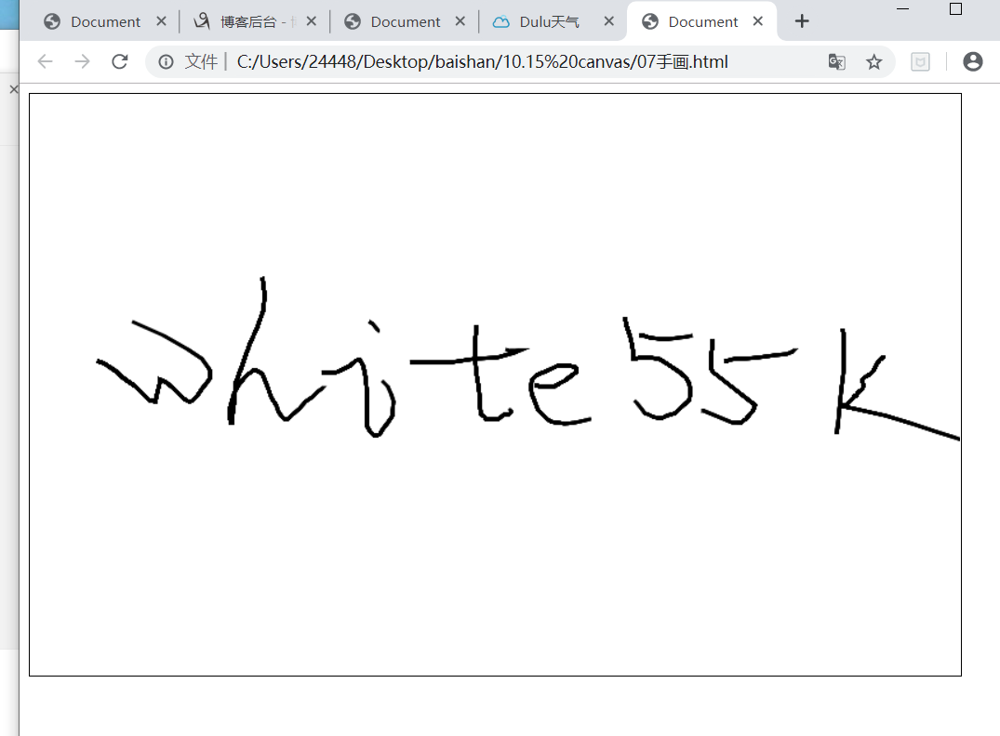

<!DOCTYPE html>
<html lang="en">
<head>
<meta charset="UTF-8">
<title>Document</title>
</head>
<body>
<canvas id="myCanvas" width="800" height="500"
style="border:1px solid #000000;">您的浏览器不支持canvas
</canvas>
<script type="text/javascript">
var c =document.querySelector('#myCanvas');
// 标识画布并指明上下文
var ctx = c.getContext('2d');
ctx.strokeStyle = '#000';
ctx.lineWidth = 3;
c.onmousedown = function (ev){
ctx.beginPath();
ctx.moveTo(ev.clientX,ev.clientY)
c.onmousemove = function (ev) {
ctx.lineTo(ev.clientX,ev.clientY);
ctx.stroke()
}
c.onmouseup = function () {
c.onmousemove = null;
}
}
</script>
</body>
</html>
